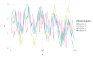
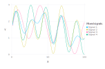
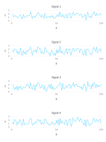

Blind Source Separation
Blind Source Separation
Frequently there are several different physical phenomena or mechanisms (sources) than may can cause transients in the observed data.
For example, in the case of water-level (hydraulic pressure) data, these might me barometric pressure fluctuations, tidal effects, pumping effects, etc. In the case of geochemical concentrations, these may represent a mixture of different groundwater sources with different initial geochemical compositions.
The separation of the different signals observed in the data is important for conceptualization of the site conditions.
Below a series of synthetic examples are presented how transient data can be used to identify (separate/unmix) the original signals.
More complicated Blind Source Separation (BSS) analyses can be found in:
Alexandrov, Boian S., and Velimir V. Vesselinov. "Blind source separation for groundwater pressure analysis based on nonnegative matrix factorization." Water Resources Research 50.9 (2014): 7332-7347.
All the figures below are generated using examples/blind_source_separation.jl. BSS can be performed using different methods. The examples below use the Ipopt implementation in the JuMP Julia module.
Sources generated using sine functions and random noise
Original sources (assumed unknown)

Mixed sources observed at 4 different monitoring locations (representing 4 different signals or observation streams)

Reconstructed (unmixed) original sources based on the observed data

Sources generated using sine functions
Original sources (assumed unknown)

Mixed sources observed at 4 different monitoring locations (representing 4 different signals or observation streams)

Reconstructed (unmixed) sources based on the observed data

Sources generated using random noise
Original sources (assumed unknown)

Mixed sources observed at 4 different monitoring locations (representing 4 different signals or observation streams)

Reconstructed (unmixed) original sources based on the observed data